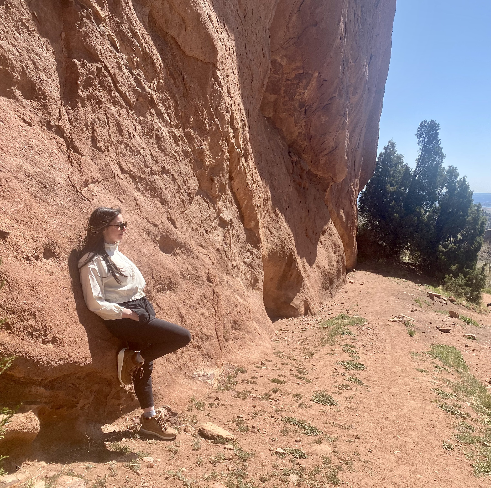
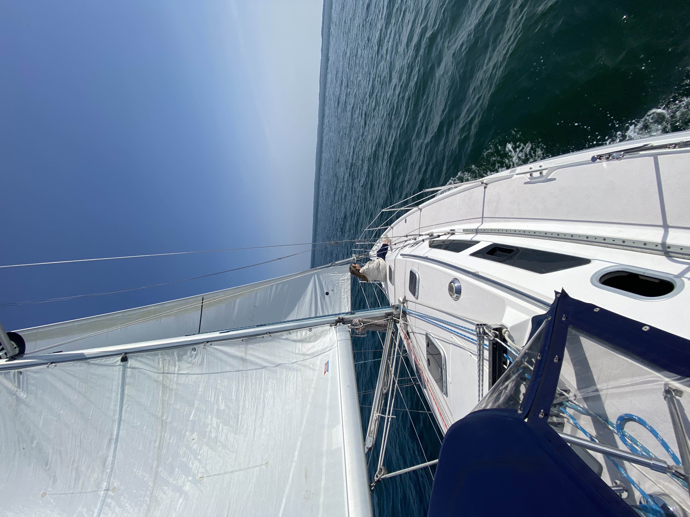

About Me


Hello and thank you for visiting my Portfolio page! My name is Lynn Sadler, and I am currently
embarking on my journey as a full stack web developer through an accelerated 6 month bootcamp
program at UConn. My curiosity to dissect the user-facing systems tied to the back end of the
application has driven me to obtain my skills in the Cross-discipline of Full Stack Development.
Using my strong analytical skills, diligence and creative thinking, I am a driven to deliver
solutions for aesthetically pleasing UI tied to clean code of the back frame.
I have spent 12 passionate years in HealthCare IT supporting the Patient Electronic
Health Record. Throughout my career I've built custom features for end user layout and interactions
linked to back-end triggers resulting in outcomes that enhancing patient care workflow and hospital
throughput metrics. It's been extremely rewarding to focus my skills on projects optimizing the EHR
for all clinical roles that impact HealthCare outcomes.
My hobbies include hiking and sailing. There are many beautiful places to hike where I live in
New England; but in the picture above I set out to hike the Red Rocks in Colorado which
was one of my favorite hikes to date! I own a 39 ft Catalina sail boat and enjoy taking day sails in
Fisher's Island Sound.
I have also embarked on many longer journeys over to Block Island, Martha's Vineyard and Nantucket.
My hobbies embody my Motto - "Enjoy the journey". It's not always about the
destination but the journey
you took to get there!